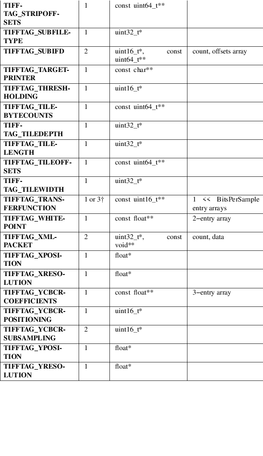

TIFFGetField − get the value(s) of a tag in an open TIFF file
#include <tiffio.h> #include <stdarg.h>
int TIFFGetField(TIFF *tif,
ttag_t tag, ...)
int TIFFVGetField(TIFF *tif, ttag_t tag, va_list ap)
int TIFFGetFieldDefaulted(TIFF *tif, ttag_t tag, ...)
int TIFFVGetFieldDefaulted(TIFF *tif, ttag_t tag, va_list
ap)
TIFFGetField() returns the value of a tag or pseudo−tag associated with the the current directory of the opened TIFF file tif. (A pseudo−tag is a parameter that is used to control the operation of the TIFF library but whose value is not read or written to the underlying file.) The file must have been previously opened with TIFFOpen(). The tag is identified by tag, one of the values defined in the include file tiff.h (see also the table below). The type and number of values returned is dependent on the tag being requested. The programming interface uses a variable argument list as prescribed by the stdarg.h interface. The returned values should only be interpreted if TIFFGetField() returns 1.
TIFFVGetField() is functionally equivalent to TIFFGetField() except that it takes a pointer to a variable argument list. TIFFVGetField() is useful for layering interfaces on top of the functionality provided by TIFFGetField().
TIFFGetFieldDefaulted() and TIFFVGetFieldDefaulted() are identical to TIFFGetField() and TIFFVGetField(), respectively, except that if a tag is not defined in the current directory and it has a default value, then the default value is returned.
The tags understood by libtiff the number of parameter values, and the types for the returned values are shown below. The data types are specified as in C and correspond to the types used to specify tag values to TIFFSetField(). Remember that TIFFGetField() returns parameter values, so all the listed data types are pointers to storage where values should be returned. Consult the TIFF specification (or relevant industry specification) for information on the meaning of each tag and their possible values.

|
†: |
If SamplesPerPixel is one, then a single array is returned; otherwise three arrays are returned. | ||
|
â¡: |
The contents of this field are quite complex. See âThe ICC Profile Format Specificationâ, Annex B.3 âEmbedding ICC Profiles in TIFF Filesâ (available at http://www.color.org) for an explanation. |
If you canât find the tag in the table above that means this is an unsupported tag and is not directly supported by the libtiff library. You will still be able to read itâs value if you know the data type of that tag. For example, if you want to read the LONG value from the tag 33424 and ASCII string from the tag 36867 you can use the following code:
uint32_t count;
void *data;
TIFFGetField(tiff, 33424, &count, &data);
printf("Tag %d: %d, count %d\n", 33424, *(uint32_t *)data, count);
TIFFGetField(tiff, 36867, &count, &data);
printf("Tag %d: %s, count %d\n", 36867, (char *)data, count);
1 is returned if the tag is defined in the current directory; otherwise a 0 is returned.
All error messages are directed to the TIFFErrorExtR() routine.
Unknown field, tag 0x%x:
An unknown tag was supplied.
TIFFOpen (3tiff), TIFFSetField (3tiff), TIFFSetDirectory (3tiff), TIFFReadDirectory (3tiff), TIFFWriteDirectory (3tiff), libtiff (3tiff)
LibTIFF contributors
1988-2022, LibTIFF contributors